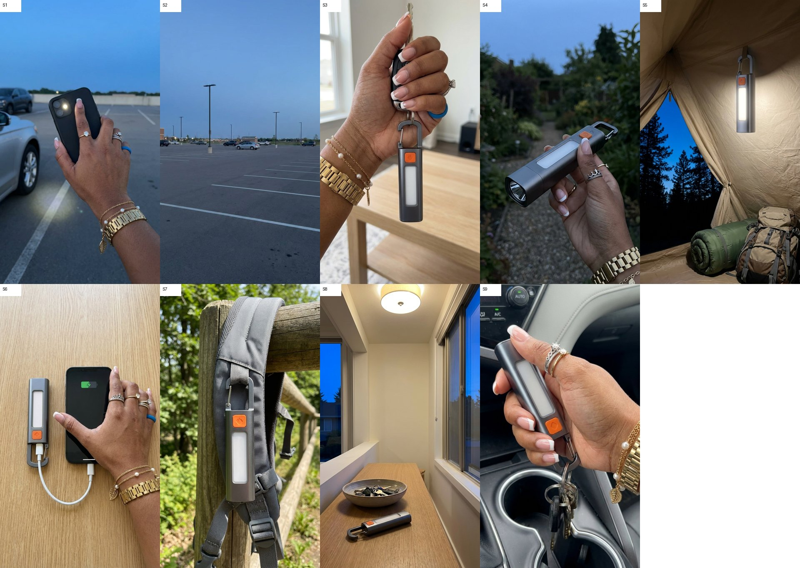
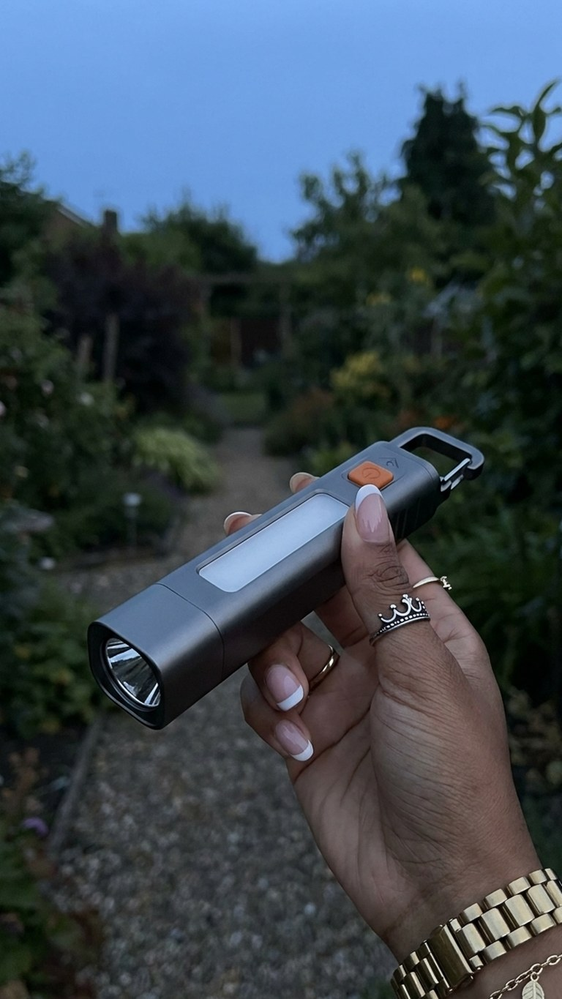
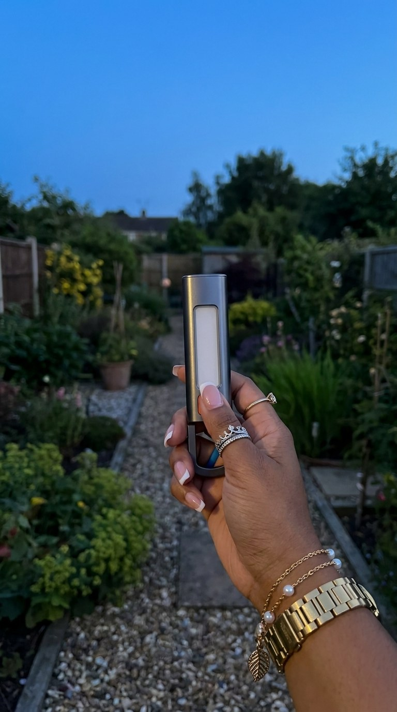
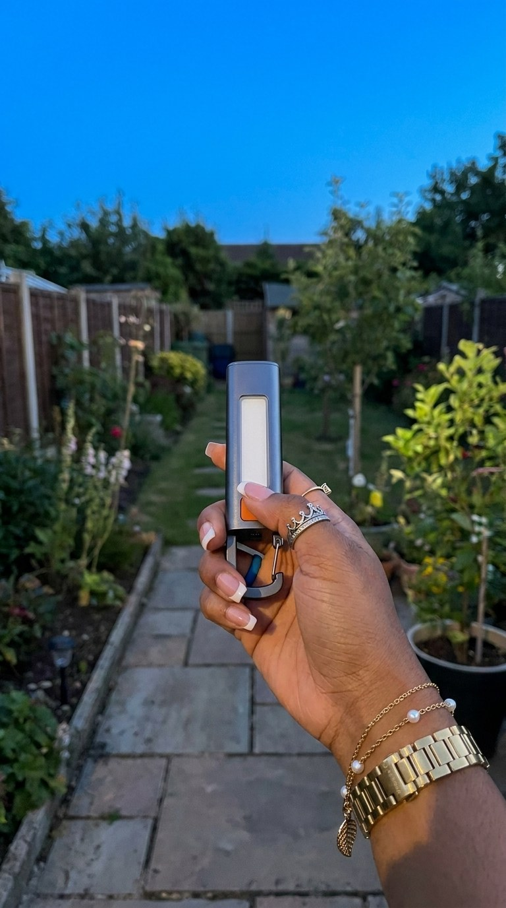

<title>Power Bank Flashlight Ad</title>
<meta name="claude:viewport-fit-sides" content="cover">
<link rel="stylesheet" href="https://fonts.googleapis.com/css2?family=Archivo:wdth,wght@75..100,500..800&family=Public+Sans:wght@400;600&family=JetBrains+Mono:wght@500&display=swap">
<style>
/* Layout: one reading column; review sections newest on top (plan now, stills and cuts land above it later). Accent = the flashlight's orange button on brushed-aluminium greys. */
:root{
  --bg:#f3f4f5; --panel:#ffffff; --fg:#1d2126; --muted:#5d6670; --line:#d6dade; --accent:#d9561a; --accent-soft:#fbe6dc; --ok:#1f7a4d;
  --display:"Archivo","Arial Narrow",sans-serif; --body:"Public Sans",system-ui,sans-serif; --mono:"JetBrains Mono",ui-monospace,monospace;
}
@media (prefers-color-scheme:dark){:root:not([data-theme="light"]){--bg:#15181b;--panel:#1d2125;--fg:#e8eaec;--muted:#9aa3ad;--line:#33393f;--accent:#f07a3e;--accent-soft:#3a2418;--ok:#5cc28e;color-scheme:dark}}
:root[data-theme="dark"]{--bg:#15181b;--panel:#1d2125;--fg:#e8eaec;--muted:#9aa3ad;--line:#33393f;--accent:#f07a3e;--accent-soft:#3a2418;--ok:#5cc28e;color-scheme:dark}
body{background:var(--bg);color:var(--fg);font:16px/1.55 var(--body);padding-left:max(16px,env(safe-area-inset-left,0px));padding-right:max(16px,env(safe-area-inset-right,0px));padding-block:28px 56px}
main{max-width:860px;margin:0 auto;display:grid;gap:36px}
h1,h2{font-family:var(--display);font-stretch:80%;line-height:1.1;text-wrap:balance;margin:0}
h1{font-size:2.3rem;font-weight:800}
h2{font-size:1.45rem;font-weight:700;display:flex;gap:10px;align-items:baseline;flex-wrap:wrap}
.eyebrow{font:500 .75rem var(--mono);letter-spacing:.08em;text-transform:uppercase;color:var(--muted)}
.lede{color:var(--muted);max-width:65ch;margin:8px 0 0}
section{display:grid;gap:14px}
.status{display:inline-block;font:500 .72rem var(--mono);padding:3px 8px;border-radius:4px;background:var(--accent-soft);color:var(--accent);letter-spacing:.04em}
.status.ok{background:transparent;border:1px solid var(--ok);color:var(--ok)}
figure{margin:0;background:var(--panel);border:1px solid var(--line);border-radius:8px;padding:12px}
figure img{display:block;width:100%;height:auto;border-radius:4px}
figcaption{font-size:.9rem;color:var(--muted);margin-top:8px}
.qs{display:grid;gap:10px;margin:0;padding:0;list-style:none}
.qs li{background:var(--panel);border:1px solid var(--line);border-left:3px solid var(--accent);border-radius:6px;padding:12px 14px}
.qs b{display:block}
.tablewrap{overflow-x:auto;border:1px solid var(--line);border-radius:8px;background:var(--panel)}
table{border-collapse:collapse;width:100%;min-width:640px;font-size:.92rem}
th,td{text-align:left;vertical-align:top;padding:10px 12px;border-bottom:1px solid var(--line)}
th{font:500 .72rem var(--mono);letter-spacing:.06em;text-transform:uppercase;color:var(--muted)}
tr:last-child td{border-bottom:0}
td.id{font:500 .85rem var(--mono);white-space:nowrap}
.tag{font:500 .7rem var(--mono);padding:2px 6px;border-radius:3px;white-space:nowrap}
.tag.hand{background:var(--accent-soft);color:var(--accent)}
.tag.free{border:1px solid var(--line);color:var(--muted)}
.num{font-family:var(--mono);font-variant-numeric:tabular-nums;white-space:nowrap}
.cost{display:grid;grid-template-columns:1fr auto;gap:6px 18px;background:var(--panel);border:1px solid var(--line);border-radius:8px;padding:14px 16px;max-width:520px}
.cost .total{font-weight:600;border-top:1px solid var(--line);padding-top:8px}
.script{margin:0;padding-left:1.4em;display:grid;gap:4px;max-width:65ch}
.notes{display:grid;gap:6px;max-width:65ch;margin:0;padding-left:1.2em;color:var(--fg)}
.muted{color:var(--muted)}
</style>

<main>
  <header>
    <div class="eyebrow">Grace · TikTok Shop · hands-only AI video</div>
    <h1>Power Bank Flashlight Ad</h1>
    <p class="lede">Multifunctional 3000mAh Power Bank Flashlight Torch (TINEKO), clip-on with a COB side light. Approved 2026-10-21 (dusk OK, Grace's hand with rings and bracelets, your product sheet). Kie spent $2.794 of $2.884 (exact, from Kie). Voice: the new "Grace cloned" (Grace C is no longer on the account).</p>
  </header>

  <section>
    <h2>Cut r1 <span class="status ok">QC passed</span></h2>
    <video src="cut_r1.mp4" controls playsinline style="width:100%;max-width:380px;border-radius:8px;border:1px solid var(--line);background:#000"></video>
    <p class="muted" style="max-width:65ch">33.2 s, 9:16, Grace voiceover at -16.9 LUFS, no text, AI finish applied (grain, sharpness, saturation down). Review copy here is 720p; the full 1080p file is 86 MB. Script gate at cut stage: OK. Compared with the 13.7M winner: light on at frame 0 like theirs; we talk faster (3.65 vs 2.66 words/s) and cut less often (2.7 vs 4.9 cuts per 10 s).</p>
    <ul class="notes">
      <li>S8 (entry table) is not used: Seedance added a second flashlight by the window from the first frame. Line 8 runs on the unused lit tails of S4 (garden) and S5 (tent) instead, so those two places appear twice. A clean S8 redo is $0.205.</li>
      <li>S9 (car keys) uses only its first 2.4 s; after that the flashlight turns and its head changes shape. "It's in the orange cart" plays over the unused end of S7 (one flashlight on the backpack).</li>
      <li>S1's clip is 4 s for a 5 s line, so the parking lot (S2) starts during "until it dies".</li>
      <li>Line 4: the press and light-on show, but no beam spot on the path (lens points toward the camera side).</li>
    </ul>
  </section>

  <section>
    <h2>S4 test clip <span class="status ok">passes QC</span></h2>
    <video src="S4_clip.mp4" controls playsinline muted loop style="width:100%;max-width:380px;border-radius:8px;border:1px solid var(--line);background:#000"></video>
    <p class="muted" style="max-width:65ch">Seedance 2.0 Mini, 5 s, $0.205. The thumb presses the orange button, the side light and lens come on; the flashlight, rings and bracelets stay the same for all 5 s; 2x edge check clean. One gap: the lens points toward the camera side, so there is no beam spot on the path. For line 4 ("Press the orange button for a beam you can focus") the press and light-on carry it; a redo pointing the lens away would be $0.205 if you want the spot on the ground.</p>
  </section>

  <section>
    <h2>All 9 stills <span class="status ok">QC done</span></h2>
    <figure>
      
      <figcaption>Free fixes: S6 light window was tinted yellow, now frosted white; S6 clip has the hand lift off and slide out (her palm lies flat on the phone, which melts in clips); S9 blue wristband cropped out (1.07x) and its clip is a small lift so the keys swing. S1 holds the phone with fingers on its back, the phone light on. S2, S5, S7, S8 have no hand. Same product order in every shot: hook, orange button, white window, lens.</figcaption>
    </figure>
  </section>

  <section>
    <h2>S4 test still, round 3 <span class="status ok">passes QC</span></h2>
    <figure style="max-width:380px">
      
      <figcaption>Held level, lens pointing over the path, orange button, white window and carabiner all visible, real grip, crown ring, gold rings and gold link bracelet. 2x edge check clean (no halo or smear). Free fix: cropped out a blue wristband the model added (1.16x). Clip action: thumb slides up, presses the button, the beam lands on the gravel and the spot tightens. This frame is now the look reference for the other 8 stills.</figcaption>
    </figure>
  </section>

  <section>
    <h2>S4 test still, round 2 <span class="status">failed QC</span></h2>
    <figure style="max-width:380px">
      
      <figcaption>Better dusk, same faults: held upright, forearm in frame, the orange button hidden under her thumb. The upright front view I passed as the main reference pulls it upright. Round 3 swaps in your sheet's 3/4 lens view as the main reference (held level, lens pointing down the path, frame cut at the wrist). Not used for any clip.</figcaption>
    </figure>
  </section>

  <section>
    <h2>S4 test still, round 1 <span class="status">failed QC</span></h2>
    <figure style="max-width:380px">
      
      <figcaption>Right: your gunmetal product, orange button, white window, carabiner; Grace's crown ring, gold solitaire, link bracelet, pearl chain and leaf charm; a real grip. Wrong: forearm in frame and the hand covers most of the flashlight; the torch head points at the sky, so the beam can't land on the path; too light for a beam to show. Fix: side view held level, head pointing down the path, small hand with the wrist at the edge, 20 minutes after sunset. Not used for any clip.</figcaption>
    </figure>
  </section>

  <section>
    <h2>Product lock sheet <span class="status ok">yours</span></h2>
    <figure>
      
      <figcaption>Your sheet (2026-10-21) replaces the one I built from the listing. It goes into every product still and clip, with its top-right front view as the main reference. The sheet disagrees with itself in one place: the top-left view puts the orange button next to the lens, the top-right view next to the hook. I follow the top-right front view (hook, button, white window, lens head).</figcaption>
    </figure>
  </section>

  <section>
    <h2>Questions before anything is paid</h2>
    <ul class="qs">
      <li><b>1. Does Grace have the sample? A phone photo of it (front + the port end) would lock the real product.</b><span class="muted">Without it I use the sheet above: silver body, round orange button, gunmetal head.</span></li>
      <li><b>2. Dusk look OK for 5 shots?</b><span class="muted">A flashlight only reads in low light. I'd do blue-hour dusk with bright, neutral exposure (never black night or golden), and daylight for the other 4.</span></li>
      <li><b>3. Same hand as LGXNDS v6?</b><span class="muted">Grace's pink and white French tips, thin gold bracelet watch, no rings.</span></li>
    </ul>
  </section>

  <section>
    <h2>Script <span class="status ok">gate OK</span></h2>
    <ol class="script">
      <li>I know I cannot be the only one who uses their phone as a flashlight until it dies.</li>
      <li>Then you're in a dark parking lot with no light and no phone.</li>
      <li>This is a flashlight and a power bank, and it clips right onto your keys.</li>
      <li>Press the orange button for a beam you can focus.</li>
      <li>Hang it up and the side light works like a camping light.</li>
      <li>Phone dying? Plug it in. It recharges with USB-C, same as your phone.</li>
      <li>My only complaint? Everybody who sees it is going to want one.</li>
      <li>The clocks go back November first, so it's dark before dinner.</li>
      <li>Grab one for your keys and one for your mom's car.</li>
      <li>It's in the orange cart.</li>
    </ol>
    <p class="muted">120 words, about 37 s in Grace C. Reading grade 2.2. Hook H063 word for word. Swap hooks for later videos: H133 "This is the kind of thing you buy before you are desperate." and H094 "Watch what happens when I press this orange button." No on-screen text unless you say yes (option: "my phone light was not enough").</p>
  </section>

  <section>
    <h2>Shots</h2>
    <div class="tablewrap">
      <table>
        <thead><tr><th>Shot</th><th>Line</th><th>What we see</th><th>Type</th><th>Model</th></tr></thead>
        <tbody>
          <tr><td class="id">S1</td><td>1</td><td>Dusk parking lot, hand holds a phone, its flashlight flickers out by the car tyre</td><td><span class="tag hand">HAND</span></td><td>Seedance 4 s</td></tr>
          <tr><td class="id">S2</td><td>2</td><td>Wide dusk parking lot, slow walk-in toward the car</td><td><span class="tag free">HAND-FREE</span></td><td>Seedance 5 s</td></tr>
          <tr><td class="id">S3</td><td>3</td><td>Daylight, hand lifts a key ring, the flashlight swings on its hook</td><td><span class="tag hand">HAND</span></td><td>Seedance 5 s</td></tr>
          <tr><td class="id">S4</td><td>4</td><td>Dusk garden path, thumb presses the orange button, beam spot tightens (test clip, riskiest)</td><td><span class="tag hand">HAND</span></td><td>Seedance 5 s</td></tr>
          <tr><td class="id">S5</td><td>5</td><td>Hung from a tent ceiling, side light glowing, dolly in</td><td><span class="tag free">HAND-FREE</span></td><td>Seedance 5 s</td></tr>
          <tr><td class="id">S6</td><td>6</td><td>Daylight, phone on a cable from the flashlight, green charging icon</td><td><span class="tag hand">HAND</span></td><td>Seedance 5 s</td></tr>
          <tr><td class="id">S7</td><td>7</td><td>Clipped to a backpack strap on a trail, slow arc</td><td><span class="tag free">HAND-FREE</span></td><td>Seedance 5 s</td></tr>
          <tr><td class="id">S8</td><td>8</td><td>Entry table by the front door, blue dusk in the window, push-in</td><td><span class="tag free">HAND-FREE</span></td><td>Seedance 5 s</td></tr>
          <tr><td class="id">S9</td><td>9, 10</td><td>Inside a car, hand clips ONE flashlight onto the key ring</td><td><span class="tag hand">HAND</span></td><td>Seedance 5 s</td></tr>
        </tbody>
      </table>
    </div>
    <p class="muted">4 of 9 hand-free. All clips Seedance 2.0 Mini in reference mode (clean still + sheet + front crop); no Kling (your call, 2026-10-21). Every shot moves; no Ken Burns, no text, no product cards. Bright neutral grade, AI finish last.</p>
  </section>

  <section>
    <h2>Cost and time</h2>
    <div class="cost">
      <span>9 stills, Gemini 3 Pro Image (S4 first, rest built on it)</span><span class="num">$0.81</span>
      <span>S4 test still redos (rounds 2 and 3)</span><span class="num">$0.18</span>
      <span>S4 round 3 (OK'd)</span><span class="num">$0.09</span>
      <span>9 Seedance clips (S1 4 s, eight at 5 s), no Kling</span><span class="num">$1.804</span>
      <span class="total">Kie total</span><span class="num total">$2.884</span>
      <span>ElevenLabs Grace C voiceover</span><span class="num">~600 chars</span>
    </div>
    <p class="muted">About 1.5 hours after your OK: stills 15 min (shown here before any clip), clips 30 min, cut and QC 30 min. Every redo is asked first with its cost.</p>
  </section>

  <section>
    <h2>Research behind it</h2>
    <ul class="notes">
      <li>Top 2-in-1 flashlight power bank video (@zin5bamu, 13.7M views) has the light on at frame 0 and one spec that lands: you can focus it.</li>
      <li>@macson102 (519K): "I didn't think I needed this… until the power went out." The dark plus outage is the pain.</li>
      <li>Real people: "my phone was about to die but i needed to use the flashlight. it died while the flashlight was on" (Reddit). Buyers ask "Would be this good for a power out?" and "How long does the battery last".</li>
      <li>Best sellers in the category are 2-in-1 flashlight power banks (50K and 28K units). Searches lean car and keys.</li>
      <li>Real urgency: clocks go back Sunday, November 1. No lumens, hours or charge counts (the listing doesn't give them).</li>
    </ul>
  </section>
</main>
